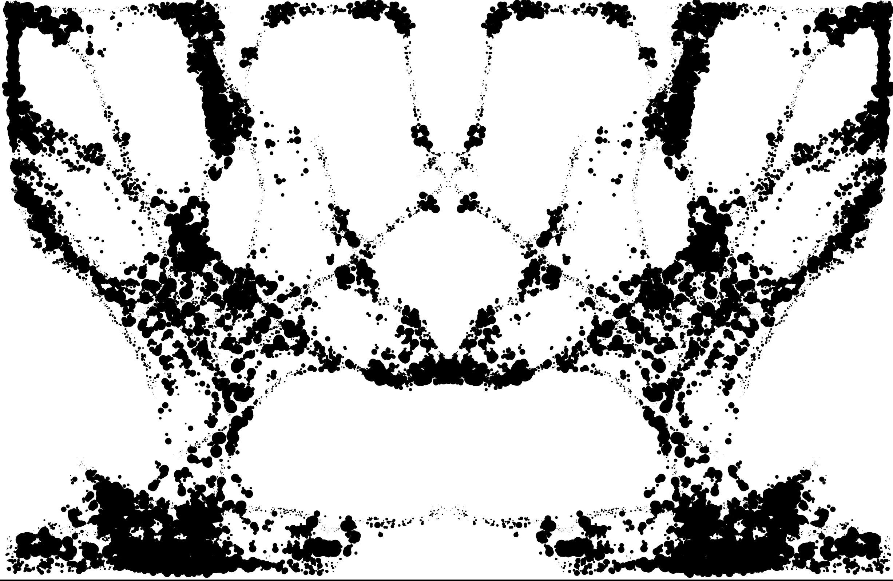

TYPO
Typo
Type text and shatter it through geometry-altering filters. Drag-drop custom fonts.

SIGILSigil
Organic ink and cut mirror drawing with jagged-edge export.
PRISM
Prism
Visual presets with kaleido weave, fractal bloom, ember drift and more.
PHANTOM
Phantom
Concert-ready point cloud visuals with mirrored apparitions, light beams, and glitched fracture modes.
● LIVE
PHANTOM (MICROPHONE)
Phantom (Microphone)
Live audio-reactive visualization. Motion fully driven by your microphone input — bass, mids, brightness and transients.